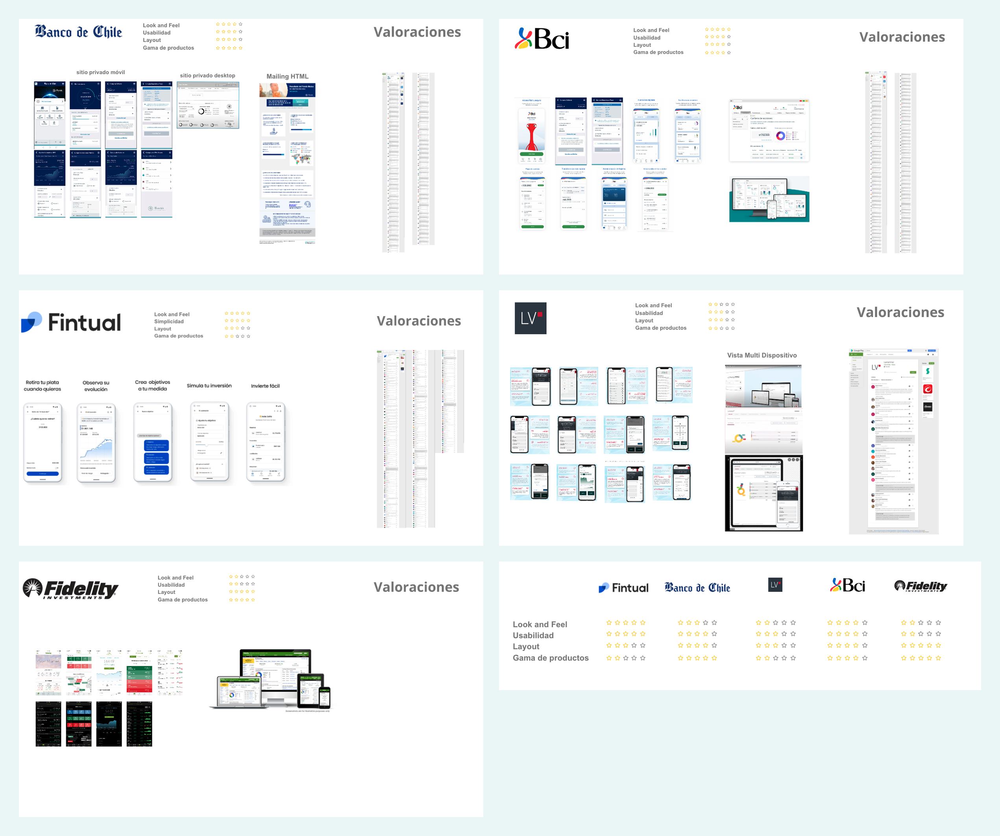
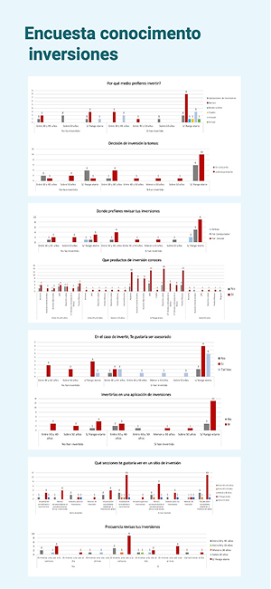
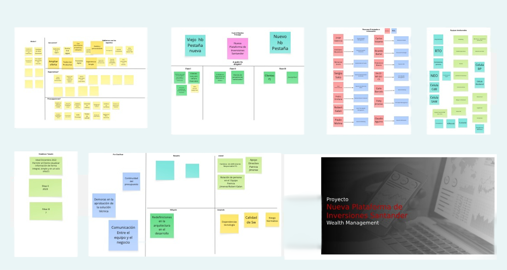
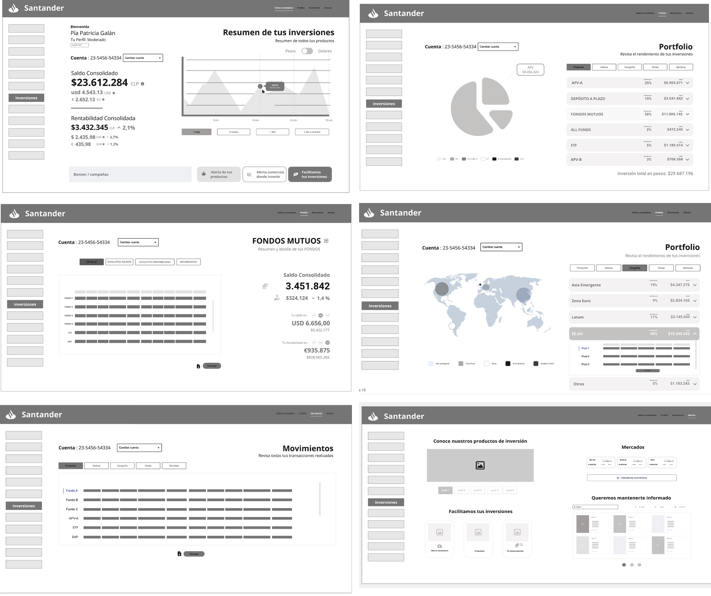
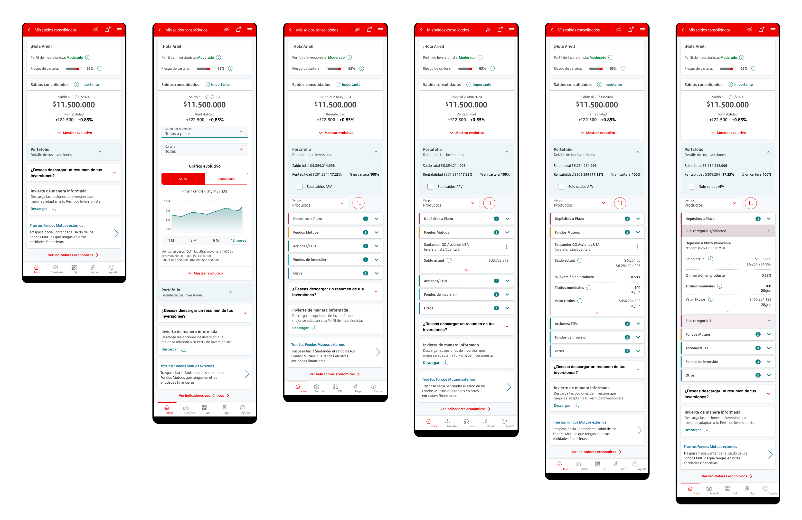

Entender antes de diseñar
El proyecto comenzó con un proceso de discovery que combinó benchmark competitivo, encuestas cuantitativas a usuarios y análisis del contexto de inversiones en Chile. El objetivo era validar que el problema existía y dimensionar qué tan bien lo estaban resolviendo otras plataformas.

↑ Benchmark competitivo — análisis de plataformas de inversión locales e internacionales

↑ Encuesta cuantitativa — hábitos y conocimiento de inversión de usuarios chilenos (n=40+)
Los clientes invertían sin ver el panorama completo
Santander Chile ofrecía acceso a múltiples productos — Fondos Mutuos, Acciones y ETFs, Depósitos a Plazo, APV, Ahorro Automático. El problema: cada producto vivía en su propio silo. No había forma de ver el portafolio completo en un solo lugar.
Un cliente con acciones, fondos mutuos y un depósito a plazo debía navegar entre secciones distintas para entender cuánto tenía invertido en total y qué rentabilidad estaba obteniendo.
Diseñar el sistema antes de las pantallas
Antes de abrir Figma para diseñar, definí la arquitectura de información del nuevo portal. El diagrama muestra cómo se organizaron los módulos principales — Saldos consolidados, Portafolio con distribución por múltiples dimensiones, Evolución, Rentabilidad, Movimientos — y cómo se conectan entre sí.

↑ Arquitectura de información del nuevo portal — definición de módulos, jerarquía y navegación

↑ Overview del proceso — definiciones, flujos y Brief del negocio

↑ Exploración desktop — portafolio con vista geográfica de inversiones (wireframe)
Aprender de quien ya lo había resuelto
Antes de diseñar la primera pantalla de alta fidelidad, coordiné sesiones con el equipo de Santander España — quienes ya habían construido su versión de la experiencia consolidada. El objetivo no era copiar: era aprender de sus decisiones y evaluar qué era aplicable al contexto chileno.
Las sesiones fueron multidisciplinarias: PO, Lead Técnico y UX de ambos lados. Analizamos su solución desktop y mobile, la arquitectura de información que habían elegido, y las restricciones de infraestructura que habían enfrentado.
Consistencia de datos sobre volumen de funciones
La decisión más importante del proyecto no fue qué pantallas diseñar. Fue cómo definir la estructura de datos compartida que haría posible una vista consolidada real. Junto al equipo técnico, definimos un modelo basado en atributos comunes entre todos los productos: saldo, rentabilidad, moneda, porcentaje en cartera.
Un sistema que maneja la complejidad con claridad
La solución final no fue solo una pantalla de resumen. Fue un sistema completo que contemplaba todos los estados posibles del usuario — con perfil / sin perfil, con inversiones / sin inversiones, con errores de servicio — y respondía a cada uno con una experiencia coherente.
La pantalla principal consolida saldo total, rentabilidad en monto y porcentaje, gráfico evolutivo configurable, y acceso al portafolio detallado — todo en un solo scroll en mobile.

Home mobile · Vista por niveles

FTU · Home mobile
En desktop, la experiencia de Exposición de Cartera fue uno de los componentes desafiantes: un indicador de riesgo del portafolio que requirió diseñar una capa educativa completa — tooltips, modales explicativos y desglose detallado por tipo de activo.

↑ Desktop-Mobile · Exposición de cartera — indicador de riesgo con desglose detallado y contenido educativo contextual
La primera vista consolidada de inversiones en Santander Chile
La experiencia de Saldos Consolidados representó un cambio estructural en cómo los clientes perciben y gestionan sus inversiones. Por primera vez, un cliente con múltiples productos podía ver el estado completo de su portafolio en una sola pantalla, con rentabilidad en tiempo real y visibilidad de riesgo.